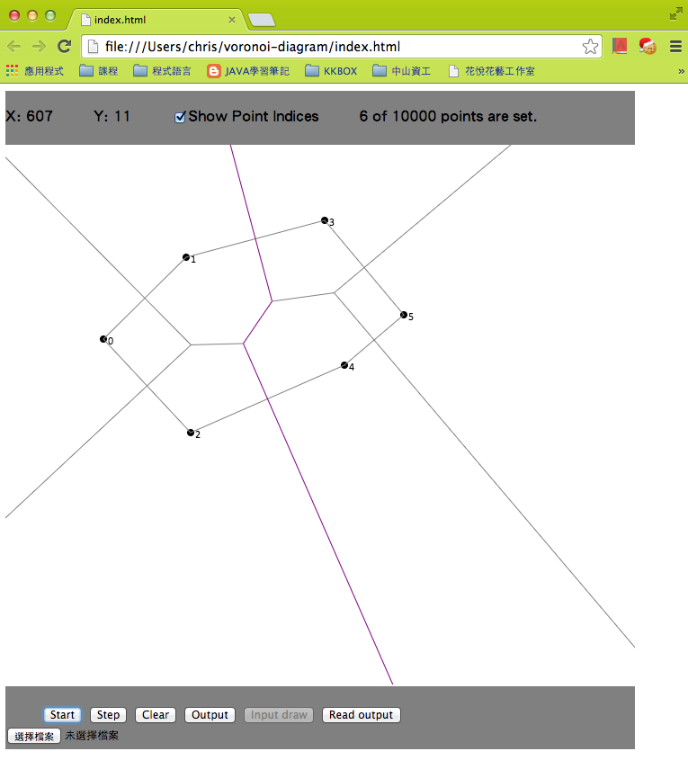

開發環境
- Vim 7.3 功能強大的編輯器
- Javascript 適合快速開發的直譯式程式語言
- KineticJS 專業Javascript 繪圖套件
- jQuery 邪惡的Javascript 函式庫


輸入與輸出規格
輸入:
1.滑鼠可在畫布上任意新增頂點。其畫布大小為 700 * 600
2.點選"選擇檔案"，讀取預先設定好的測資進來，並點選"Input draw"畫出
3.點選"選擇檔案"，讀取已畫好的 Voronoi Diagram，並點選"Read output"畫出。
輸出:
1.點選"Start"，直接將 Voronoi Diagram 畫在畫布上
2.點選"Step"，將 Voronoi Diagram 以 Step by Step 的方式畫在畫布上
3.點選"Output"，將 Voronoi Diagram 的所有 Points 及 Edges 依照 lexical order 存成檔案
介面與功能規格

1.顯示滑鼠坐標位置
2.可選擇是否顯示 Point 的 Index
3."Start" 按鈕，執行 Voronoi Diagram
4."Step" 按鈕，逐步執行 Voronoi Diagram
5."Clear" 按鈕，清空畫布
6."Output" 按鈕，輸出 Voronoi Diagram 結果到檔案
7."Input Draw" 按鈕，畫出讀入檔案的 Points
8."Read output" 按鈕，畫出讀入檔案的 Voronoi Diagram
9."選擇檔案" 按鈕，選擇要讀取的檔案